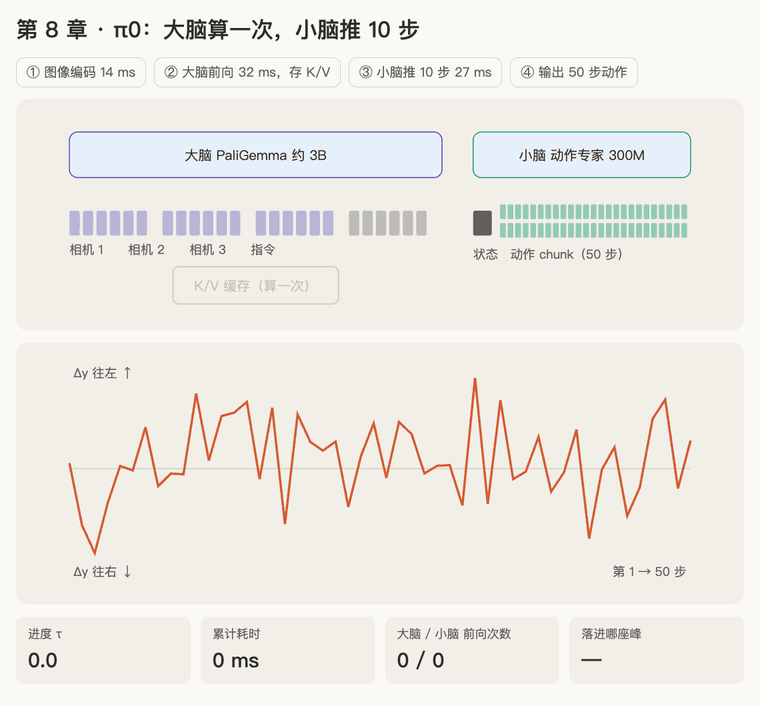
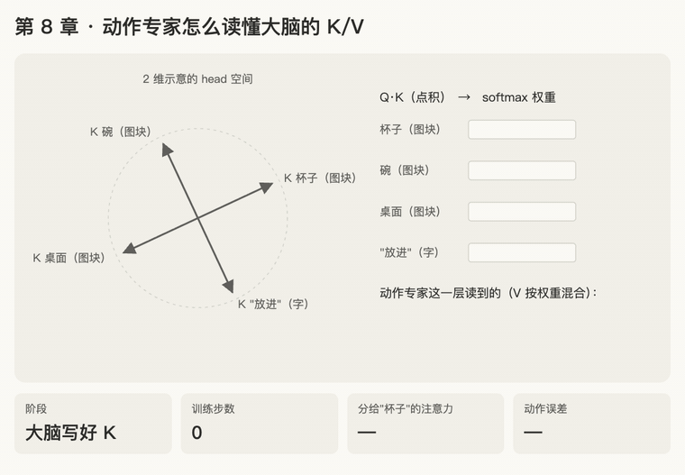
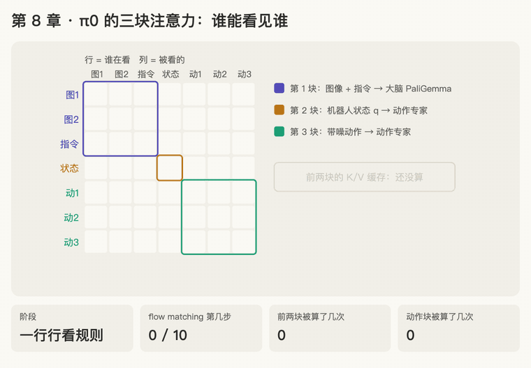
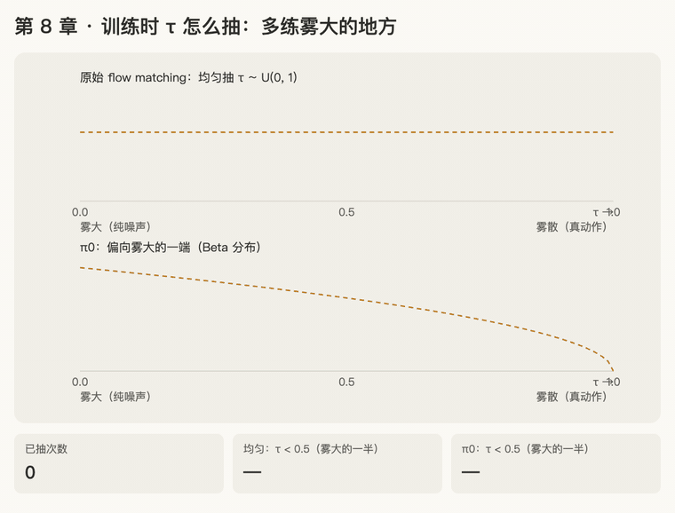

第 8 章 · π0：大脑 + 小脑，动作专家（action expert）
本章回答：π0 怎么做到不用"一个字一个字念"，又能输出连续、多峰、50 Hz 的动作？
讲解日期：2026-11-04 · 上一章：第 7 章 FAST · 下一章：第 9 章 知识隔离与 π0.5
本章缩写：VLM = Vision-Language Model（视觉 / 语言 / 模型）；K/V = Key / Value（键 / 值）缓存；MoE = Mixture of Experts（专家 / 混合）；FAST = Frequency-space Action Sequence Tokenization；RTX 4090 = NVIDIA 显卡型号。全表见 appendix-glossary.md
讲解
第 1 步：一个会议室，两套脑子
第 6–7 章的路线是"动作也变成词，让 VLM 说出来"。π0 换了思路：动作不变成词，而是在 VLM 旁边加一个专门出动作的小网络，叫动作专家（action expert）。
白话类比：大脑和小脑
- 大脑（PaliGemma，约 3B）：看图、读指令、理解"杯子在哪、要放进碗里"；
- 小脑（动作专家，约 300M，从零训练）：负责把"想法"变成精确、流畅的手臂动作。
两者不是串起来的两个模型，而是坐在同一个会议室里开会（同一个 Transformer，每层都一起做 attention），只是各自用自己那套权重消化自己负责的 token。论文说这像只有两个专家的 MoE（materials/text/papers/pi0-2410.24164.txt 第 240–252 行："analogous to a mixture of experts with two mixture elements … we refer to the second set of weights as the action expert"）。
谁归谁管
| token | 交给谁 |
|---|---|
| 相机图像 token、指令文字 token | 大脑（VLM 权重） |
| 机器人自己的关节读数（proprioceptive state） | 小脑（动作专家） |
| 一整段 50 步的动作（训练时加了噪声） | 小脑（动作专家） |
总共 3.3B 参数（第 305–306 行）。
动作怎么出来：不是逐词念，而是 flow matching：从一团随机噪声开始，小脑推 10 步，把噪声推成一整段 50 步的连续动作（第 292–293 行："We use 10 integration steps"）。这一步就是第 4 章表里的"扩散 / flow"，下一步细讲。
为什么这样快（第 293–296 行 + 附录 D 表 I）：前缀（图像、指令、状态）只算一次，把 attention 的 K、V 缓存下来；之后 10 步只重算动作那几十个 token，而且用的是小的 300M 小脑：
| 部分 | 跑几次 | 时间（RTX 4090，3 个相机） |
|---|---|---|
| 图像编码 | 1 | 14 ms |
| 大脑：前缀前向 | 1 | 32 ms |
| 小脑：flow matching 一步 | 10 | 合计 27 ms |
| 合计 | 73 ms |
第 2 步：flow matching 怎么把噪声"推"成动作
白话类比：雾里找路的导航
你站在浓雾里一个随机的位置（随机噪声），目的地是"一段好动作"。你看不见目的地，但身边有个导航员（小脑）。每走一小步，导航员看一眼当前位置和画面，告诉你"往这个方向、这么快"（速度 \(v\)）。你照着走 0.1 的距离，再问一次。问 10 次，就走到了。
训练时怎么教导航员（pi0-2410.24164.txt 第 278–283 行）：
- 拿一段真实动作 \(A\)，再随机抽一团噪声 \(\epsilon\)；
- 随机挑一个进度 \(\tau \in [0,1]\)，把两者按比例混合： $\(A^\tau = \tau A + (1-\tau)\epsilon\)$ \(\tau = 0\) 是纯噪声，\(\tau = 1\) 是真动作，中间是"半雾半清"；
- 让小脑猜速度 \(v_\theta(A^\tau, o)\)，标准答案是从噪声指向真动作的直线方向： $\(u = A - \epsilon\)$
- 损失就是两者差的平方。
用的时候（第 287–292 行，前向 Euler 积分）：从 \(A^0 \sim \mathcal{N}(0, I)\) 出发，每步
走 10 步到 \(\tau = 1\)。
和第 4 章的多峰接上：起点是随机的。不同的起点会被导航员领进不同的山峰（左绕 / 右绕），而不会停在中间的山谷。
动画演示：π0 推理：大脑算一次，小脑推 10 步

可交互版：animations/08-pi0-inference.html（用浏览器打开，可播放、单步、换随机数重来）。
怎么看：
- 上排四个标签依次亮起：① 图像编码 14 ms → ② 大脑前向 32 ms，K/V 存进缓存（橙框亮起）→ ③ 小脑推 10 步 27 ms → ④ 输出。
- ③ 阶段只有右边 50 个动作方块在闪，每步通过橙色虚线读缓存；大脑不再动。
- 下图曲线从一团乱抖的噪声出发，每步变平滑一点（灰线是之前几步），10 步后成为一条绕行轨迹。计数停在 1 / 10、约 73 ms（OpenVLA 约 8.3 秒）。
- 交互版多点几次"换一团噪声"：有时落进左绕峰、有时落进右绕峰，不会停在中间（接第 4 章）。动画假设小脑每步都猜对速度，所以曲线直直走向目标。
第 3 步：三块注意力，谁能看见谁
对应原文：
materials/text/papers/pi0-2410.24164.txt附录 B "Attention mask"（第 862–874 行），以及正文第 281–282 行（动作 token 之间双向注意）。专家分工见第 875–882 行。
先回忆第 5 章的 prefix-LM：前缀（图 + 指令）里互相都能看，回答只能往前看。π0 把这个想法再细分一层，排成 3 块。
白话类比：会议室里三排座位
- 第 1 排：图像 + 指令（老员工，PaliGemma 预训练时就见过这类东西）；
- 第 2 排：机器人此刻的关节状态 \(q_t\)；
- 第 3 排：正在一步步变清楚的动作草稿 \(A_t^\tau\)。
规则只有两条：同一排的人互相都听得见；后排听得见前排，前排听不见后排。
三块各自的规则和原因（原文第 863–874 行）
| 块 | 里面是什么 | 能看见 | 为什么这样设计 |
|---|---|---|---|
| 1 | 图像 \(I^1_t \dots I^n_t\) + 指令 \(\ell_t\) | 只看第 1 块 | PaliGemma 预训练时从没见过状态和动作。不让它看，它就和预训练时一模一样，不会因为新输入跑偏（原文 "minimize distribution shift"） |
| 2 | 状态 \(q_t\) | 第 1、2 块 | 状态在 10 步 flow matching 里不变。不让它看动作，它的计算结果就不会随动作变，K/V 可以缓存 |
| 3 | 带噪动作 \(a^\tau_t \dots a^\tau_{t+H-1}\) | 全部 | 动作要看图、看指令、看状态才能决定怎么动；动作之间互相看，整段一起变平滑（第 281–282 行 "full bidirectional"） |
和第 1 步的"算一次存起来"接上
第 1 步说过：大脑只算 1 次，小脑算 10 次。为什么能这样？就是因为这张遮挡表。 前两块看不到动作，动作在 10 步里怎么变，前两块算出来的东西都一样，所以算 1 次、存进 K/V 缓存就够了（原文第 871–873 行 "allows its corresponding keys and values to be cached"）。如果状态也能看动作，每一步它都得重算。
谁用哪套权重（第 875–882 行）：第 1 块走大脑 PaliGemma 的权重；第 2、3 块（PaliGemma 预训练没见过的输入）走动作专家的权重。两套权重只在 attention 里"见面"。
数字演示：用 2 张图 + 1 句指令 + 1 个状态 + 3 个动作，一共 7 个 token。
| 谁在看 ＼ 被看的 | 图1 | 图2 | 指令 | 状态 | 动1 | 动2 | 动3 |
|---|---|---|---|---|---|---|---|
| 图1 / 图2 / 指令 | ✓ | ✓ | ✓ | ✗ | ✗ | ✗ | ✗ |
| 状态 | ✓ | ✓ | ✓ | ✓ | ✗ | ✗ | ✗ |
| 动1 / 动2 / 动3 | ✓ | ✓ | ✓ | ✓ | ✓ | ✓ | ✓ |
插问（2026-11-09）：PaliGemma 在 π0 里干什么？它交给动作专家的是什么？
对应原文：
pi0-2410.24164.txt第 875–888 行（Action expert：一个 transformer、两套权重、只在 self-attention 里交互），第 849–851 行（只用动作 token 的输出，线性投影成 \(v_\theta\)），第 862–874 行（三块注意力）。
作用：PaliGemma 是"大脑"。它把几张相机图和一句指令，变成一排读懂了的 token：每个图块知道"这是杯子、在碗左边"，每个字知道"要把杯子放进碗"。它负责看懂和理解，不负责出动作。
它交出去的不是一句话，也不是一个总结向量，而是 每一层的 K 和 V：
- π0 是一个 transformer（18 层），每层里有两套权重：图 + 指令的 token 走 PaliGemma 的权重，状态和动作 token 走动作专家的权重；
- 两套权重只在 attention 这一步见面（第 878 行 "interact only through the transformer's self-attention layers"）；
- 在每一层，动作 token 拿自己的 Q 去查所有 token 的 K，再按比例取它们的 V。其中图 + 指令那部分的 K、V，就是 PaliGemma 在这一层算出来的；
- 所以动作专家每一层都能"翻看"大脑在同一层的理解，前后 18 次；
- PaliGemma 自己最后一层的输出（本来用来说话的词）在 π0 里不用。最终只取动作 token 的输出，用一层线性投影变成速度 \(v_\theta\)（第 849–851 行）。
白话类比：开会时的共享白板
不是大脑写一份总结报告交给小脑，而是两人在同一间会议室开 18 轮讨论。每一轮，大脑把自己的理解写在白板上（K = 目录标签，V = 内容），小脑按需要去看（Q = 我想找什么）。大脑看不到小脑写的东西（第 3 步的遮挡规则），所以大脑的白板只写 1 次，存起来（K/V 缓存），小脑的 10 步推理每一步都来读。
数字：PaliGemma 的 Gemma 2B 宽 2048、18 层；动作专家缩小到宽 1024、约 300M（第 885–891 行）。宽度可以不一样，因为两者只在 attention 里交换 K、V。
一句话：PaliGemma 负责看懂，交出去的是每一层里图和指令 token 的 K/V；动作专家读这些 K/V，算出速度 v。
插问 2（2026-11-09）：两套权重怎么"互相看懂"？K/V 到了动作专家那里，它怎么知道是什么意思？
对应原文：
pi0-2410.24164.txt第 875–891 行（一个 transformer、两套权重、只在 self-attention 里交互；宽度可以不同），第 207 行与第 881 行（大脑从 PaliGemma 初始化，动作专家是新的）。前置知识：transformer-deep-dive 第 2 章 点积、第 4 章 加权平均、第 9 章 QKV、第 13 章 多头。
一句话答案：不是天生看得懂，是训练出来的。两边先各自把向量投影到同一个"会议语言"空间（同样的 head 维度 256），然后动作专家的 Q 在训练里被动作误差一点点推着，学会去"问"大脑的 K 里有用的那些。
① 机制：每个 token 用自己那套权重，投影到同一个空间
在每一层：
| token | 用谁的权重 | 算出什么 |
|---|---|---|
| 图块、指令字 | PaliGemma 的 \(W_K, W_V\) | K（目录标签）、V（内容），都是 256 维 |
| 状态、动作 | 动作专家的 \(W_Q\)（也有自己的 \(W_K, W_V\)） | Q（我想找什么），也是 256 维 |
然后就是 Transformer 课里学过的同一套计算： 1. Q 和每个 K 做点积：越同向，分数越大（第 2 章"对位相乘再相加，数字越大越像它"）； 2. 分数过 softmax 变成权重（加起来 = 1）； 3. 按权重把各个 V 加权平均，得到这一层读到的内容； 4. 再用动作专家自己的输出矩阵 \(W_O\) 变回它自己的宽度（1024）。
两套权重宽度不一样（2048 vs 1024）没关系，只要投影出来的 head 维度一样（256），点积就能算。这就是原文说"width 和 mlp dim 不必一样"的原因（第 885–888 行）。
② 为什么"看得懂"：Q 是被动作误差训练出来的
- 大脑从 PaliGemma 初始化（第 207 行），它的 K/V 一开始就有意义："这块是杯子、那块是碗"。
- 动作专家是新的，它的 \(W_Q\) 一开始是随机的，问出来的问题对不上任何有用的 K，读到的东西乱七八糟，动作误差很大。
- 训练时，动作误差的梯度一路传回 \(W_Q\)，只朝一个方向推：让读到的东西能把动作做对。哪个 K 的内容对动作有用，Q 就被推着和它同向。
- 训练足够多以后，动作专家"学会了查大脑的目录"。没有人告诉它"要看杯子"，是误差逼出来的。
（π0 训练时大脑的权重也一起更新，所以大脑的 K/V 也会稍微往"对动作有用"的方向变；这会带来大脑忘掉常识的风险，第 9 章知识隔离就讲这个。）
白话类比：新员工学查老员工的档案柜
老员工（大脑）的档案柜早就按自己的标签（K）整理好了，每格放着内容（V）。新员工（动作专家）一开始不知道该翻哪格，随便抽一格，拿去干活出错被骂（动作误差）。错多了就知道："要放杯子，就该翻标着'杯子'的那格"。他学会的是怎么提问（Q），档案柜本身基本没动。
数字演示（把 256 维压成 2 维，动画里同样的数）：
4 个大脑 token 的 K 方向：杯子 25°、碗 115°、桌面 205°、"放进" 295°。Q 长度 3，K 长度 1，点积 = 3 × cos(夹角)。
| 时候 | Q 方向 | 和杯子的点积 | 杯子的权重 | 读到的主要是 |
|---|---|---|---|---|
| 训练前 | 205°（随机，指向桌面） | 3 × cos 180° = −3 | ≈ 0% | 桌面纹理，没用 |
| 训练后 | 25°（和杯子 K 同向） | 3 × cos 0° = 3 | ≈ 91% | 杯子的位置 |
动画演示：动作专家怎么读懂大脑的 K/V

可交互版：animations/08d-cross-attention.html（可播放、单步、重来）。
怎么看：
- 灰色箭头是大脑写好的 4 个 K，整个过程基本不动。
- 青色箭头是动作专家的 Q。一开始指向"桌面"，右边的权重条几乎全给了桌面，读到的东西没用，动作误差 1.00。
- 每训练一步，Q 往杯子的 K 转一点：点积变大 → 杯子的权重变大 → 读到杯子的位置，动作误差降到 0.09。
插问 3（2026-11-09）：遇到没见过的物体，怎么让它学会拿起来、完成任务？
对应原文：RT-2
rt2-2307.15818.txt第 140–146 行；π0.5pi05-2504.16054.txt第 500–503 行、第 600–613 行、第 686–699 行（no WD 消融）；π0pi0-2410.24164.txt第 340–345 行（微调数据量）、第 496–530 行（新任务分档）。
先分清"没见过"有三种，办法不一样：
| 档 | 没见过的是什么 | 例子 | 靠什么 | 需要新数据吗 |
|---|---|---|---|---|
| 1 | 同一类东西的新样子 | 训练里有碗，测试换个没见过的碗 | 机器人数据够多样 | 不用 |
| 2 | 机器人数据里没有这一类，但网上见过 | 从没抓过打蛋器，但 PaliGemma 在网上图片里认识它 | 大脑的常识 + 已经会的动作 | 不用（前提是常识没丢） |
| 3 | 要做的动作本身是新的 | 换卷纸芯、开微波炉 | 人示范几小时到上百小时，微调 | 要 |
第 1 档：靠多样。π0 叠碗任务的测试里混着训练没见过的碗（第 517–518 行）。π0.5 把训练用的家庭从 3 个加到 104 个，新家里新物体的成功率一路上升（第 600–613 行）。见得越杂，换个样子越不怕。
第 2 档：靠大脑的常识。这是 VLA 用 VLM 当大脑的最大理由。RT-2 的原话大意：机器人的动作本领仍然只限于机器人数据里有的那些，但它能用从网上学来的看图读字的知识，把这些本领用到新东西上（第 140–146 行）。比如它会"抓起放下"，又从网上知道"打蛋器长什么样"，就能完成"把打蛋器放进抽屉"。
前提是大脑的常识不能在训练机器人时被冲掉。π0.5 的证据：训练时去掉网络数据（no WD），对没见过类别的物体表现明显变差；作者推测网络数据里有大量关于物体的知识，让模型能听懂涉及新类别的指令（第 692–699 行）。所以 π0.5 训练时一直混着网络数据（看图说话、问答、找物体位置），目的就是"保住看图和语义能力"（第 502–503 行）。第 9 章知识隔离会讲另一个保护办法。
第 3 档：要人教。新动作不可能凭常识猜出来，要遥操作录示范，再在预训练好的模型上微调（post-training）。π0 原文：简单任务约 5 小时数据，最复杂的要 100 小时以上（第 343–345 行）。π0 把新任务按"离预训练多远"分档：叠碗、叠毛巾容易；微波炉里放保鲜盒有一个新物体（微波炉）；换卷纸芯是新物体 + 新动作（第 496–530 行）。离预训练越远，要的数据越多，但预训练过的模型总比从零训练学得快、学得好。
白话类比：新员工进了一个新厨房
- 碗换了花色：照样拿（第 1 档）；
- 第一次见到这款打蛋器，但从小在电视上见过：知道是什么，用平时拿东西的手法拿（第 2 档）；
- 要他换咖啡机的滤芯：没干过，得师傅带几遍（第 3 档）。
一句话：认识的靠见得多，没摸过但认识的靠大脑常识（所以要保护它），新动作只能靠人示范再微调。
动画演示：三块注意力和 K/V 缓存

可交互版：animations/08b-pi0-block-mask.html（用浏览器打开，可播放、单步、重来）。
怎么看：
- 先一行一行亮出规则：蓝色 = 能看见。三个彩色框是三块：紫 = 图 + 指令，橙 = 状态，青 = 动作。
- 前 4 行的右边全是灰的：前两块看不到动作。
- 进入推理后，只有青色的动作行在闪，"动作块被算了几次"一路加到 10；"前两块被算了几次"停在 1，橙框里的 K/V 缓存一直被复用。
第 4 步：训练时 τ 怎么抽，多练雾大的地方
对应原文：
materials/text/papers/pi0-2410.24164.txt第 284–285 行（正文），附录 B "Sampling the flow matching timestep"（第 892–935 行，图 14）。
先回忆第 2 步：训练时每拿到一段示范，要随机挑一个进度 τ，在那个位置造出 \(A^\tau\)，问网络"这里该往哪走"。问题是：τ 该怎么挑？
白话类比：练投篮
篮筐前有远有近很多位置。原始做法是每个位置练一样多。但如果你知道远处最难、而且第一投的方向最关键，就应该在远处多练几次，近处少练。π0 就是这么做的。
在 flow matching 里：τ 小 = 离终点远 = 噪声大（雾大）；τ 大 = 快到了 = 几乎就是真动作（雾散）。
三种抽法（原文第 915–935 行）
| 谁 | 抽法 | 偏向哪里 | 理由 |
|---|---|---|---|
| 原始 flow matching | 均匀 τ ∼ U(0, 1) | 不偏 | 每个位置一样多 |
| 图像生成（Esser 等，SD3） | logit-normal | 中间 | 两头太简单：τ 接近 1 只要原样输出；τ 接近 0 只要输出平均图 |
| π0 | 偏向 τ 小的 Beta 分布 | 雾大的一端 | 见下 |
π0 的理由：τ 接近 0 时，网络要做的事接近"看到画面后，猜动作的平均值" \(\mathbb{E}[A_t \mid o_t]\)。生成图片时，"给一句文字猜平均图"很容易（一张糊图就行）；但机器人的画面信息很多，对动作的约束非常强，猜准这个平均方向很难，也最关键：第一步方向对了，后面都是微调。所以把练习多花在这里。
公式（附录 B）： $\(p(\tau) = \mathrm{Beta}\left(\frac{s - \tau}{s};\ 1.5,\ 1\right),\quad s = 0.999\)$ 读法："p of tau 等于 Beta 分布，参数 1.5 和 1"。白话：τ 越小，被抽到的机会越大，概率密度随 τ 增大一路下降；τ > s 的地方完全不抽。
为什么 τ > 0.999 不用抽：推理时只在 τ = 0, 0.1, …, 0.9 这 10 个位置问路，从来用不到 0.999 以上，练了也白练（原文："not needed so long as the integration step δ is greater than 1 − s"）。
数字演示（按上面的公式算）：
| τ 落在 | 均匀抽 | π0 抽 |
|---|---|---|
| 0 – 0.1（雾最大） | 10% | 约 15% |
| 0 – 0.5（雾大的一半） | 50% | 约 65% |
| 0.9 – 1（快到了） | 10% | 约 3% |
（算法：令 x = (s − τ)/s，Beta(1.5, 1) 的累积是 \(x^{1.5}\)。τ < 0.5 ⇔ x > 0.5，比例 = 1 − 0.5^{1.5} ≈ 0.65。）
动画演示：τ 抽样，多练雾大的地方

可交互版：animations/08c-tau-sampling.html（可播放、单步、换随机数重来）。
怎么看：
- 每一帧都抽一批 τ，落进 10 个格子；红点是最新抽到的那个。
- 上面（均匀）十个格子一样高；下面（π0）左高右低，最右边几乎没有。
- 底部统计里，"τ < 0.5"的比例：均匀约 50%，π0 约 65%。
练习与作答记录
题 1： 1. π0 总共 3.3B 参数，动作专家 300M，大脑部分大约多少？ 2. 第 6 章 OpenVLA 出一段 50 步 × 7 维的动作要念 350 个词（350 次大模型前向）。π0 出同样一段要跑几次？（提示：flow matching 推几步？每一步都是把整段 50 个动作一起推。）
作答（2026-11-04，原话）：1=3b的vlm，2，pi0的方式时用action trunk组，用一个形状规律和起始点来做，不需要跑多次 ◐
点评： 1. ✅ 对，约 3B，就是 PaliGemma。 2. ◐ "整段一起出（action chunk）"对，但后两点不对： - "形状规律 + 起始点"是第 7 章 FAST 的压缩思路，π0 不压缩，直接输出 50 × 7 个连续数； - π0 要跑多次：大脑 1 次 + 小脑 10 次（flow matching 推 10 步）。它快不是因为只跑一次，而是因为 ① 每次都是整段 50 步一起推，不逐词；② 大的部分只跑 1 次，反复跑的是 300M 的小部分。合计约 73 ms，OpenVLA 约 8.3 秒。
题 2：只看一维。噪声 \(\epsilon = -1\)，真动作 \(A = +1\)。 1. 在 \(\tau = 0.3\) 时，混合后的 \(A^\tau\) 是多少？ 2. 标准答案速度 \(u\) 是多少？ 3. 假设小脑每一步都猜对了这个速度，从 \(A^0 = -1\) 出发，\(\delta = 0.1\)，走 10 步后到哪？
作答（2026-11-07，原话）："你做我看" ✗（没自己算，请讲解示范）
示范解答：
- \(A^{0.3} = 0.3 \times (+1) + 0.7 \times (-1) = 0.3 - 0.7 = \mathbf{-0.4}\)。进度 30%，离终点还远，所以还在负的那边。
- \(u = A - \epsilon = (+1) - (-1) = \mathbf{2}\)。从 −1 走到 +1，一共要走 2。
- 每步走 \(\delta \cdot u = 0.1 \times 2 = 0.2\)：−1 → −0.8 → −0.6 → −0.4 → … → +1，10 步正好到终点。
对一下：走 3 步后在 −0.4，和第 1 问 \(A^{0.3}\) 一样。说明"每步都猜对时，走到第 k 步就在 \(A^{\tau}\)（τ = k/10）的位置上"，训练时插值的路线就是推理时走的路线。
真实情况里小脑不会每步都猜对，而且 u 是从当前位置重新猜的，所以走出来的是一条弯一点的路，但终点仍在某一座峰附近（第 4 章）。
跟进练习：ε = 0，A = 2。τ = 0.5 时 \(A^\tau\) 是多少？u 是多少？
作答：用户反馈没讲过，改为下面重讲后的问 1–2、补练、再练（同类题，已答完）。
反馈（2026-11-08）："这个你没讲过"。确实：第 2 步当时只给了公式，没有用数字一步步演示就出题了。从头重讲，跟进练习等讲完再做。
第 2 步重讲（2026-11-08）：flow matching 完整讲一遍
用户要求："每次都要先根据教材作充分讲解说明，然后再来考我。"下面对照 π0 原文 materials/text/papers/pi0-2410.24164.txt 第 271–293 行重讲。
原文说了三件事
| 原文位置 | 内容 | 白话 |
|---|---|---|
| 第 271–272 行 | 下标是机器人的时刻，上标是 flow matching 的进度，τ ∈ [0, 1] | \(A_t^\tau\)：t 是第几个控制时刻，τ 是"雾散了多少" |
| 第 278–281 行 | 训练：抽噪声 ε，算"带噪动作" \(A_t^\tau = \tau A_t + (1-\tau)\epsilon\)，让网络输出 \(v_\theta\) 去对准 \(u = A_t - \epsilon\) | 在路上随便挑一个点，教导航员"这里该往哪走" |
| 第 287–293 行 | 推理：从纯噪声 \(A_t^0\) 出发，用前向 Euler 规则 \(A^{\tau+\delta} = A^\tau + \delta v_\theta\)，10 步（δ = 0.1） | 从随机起点出发，问 10 次路，每次走一小步 |
符号：ε（epsilon）噪声 = 起点；A 真动作 = 终点；τ（tau）进度 0 → 1；δ（小写 delta）每步走的进度 0.1；u 标准答案速度；\(v_\theta\)（v 下标 theta）网络猜的速度。上标 τ 是标签不是乘方。读法详见 appendix-symbols.md。
① 中途位置 \(A^\tau\)：按进度混合
类比：家在 0 公里，公司在 10 公里，走了 30%：位置 = 0.3 × 10 + 0.7 × 0 = 3 公里。走了多少拿多少终点，没走的部分留在起点。所以 \(A^\tau = \tau A + (1-\tau)\epsilon\) = "进度 τ 时站在哪"。
数字演示（ε = 0，A = 10）：τ = 0 → 0；τ = 0.3 → 3；τ = 0.5 → 5；τ = 1 → 10。τ = 0 是纯噪声，τ = 1 是真动作。
② 标准答案速度 u：终点减起点
类比：从家到公司的整段路 = 10 − 0 = 10 公里，方向朝公司。走在这条直路上的任何一点，"该往哪走"的答案都一样：朝公司，按整段 10 的速度走。所以 \(u = A - \epsilon\)。
数字演示：u = 10 − 0 = 10。如果起点在 12、终点在 2，u = 2 − 12 = −10，负号表示往回走。
③ 推理一步：现在位置 + 步长 × 速度
每步走 δ × u = 0.1 × 10 = 1 公里：0 → 1 → 2 → … → 10，10 步到公司。走到第 3 步在 3，正好等于 ① 里 τ = 0.3 的位置：训练时造的点，就是推理时会经过的点。
为什么要训练一个网络，不直接用 u？ 因为推理时不知道终点 A（那正是要生成的动作）。网络只看得到"现在站在哪"（\(A^\tau\)）和画面 \(o_t\)，要从这两样猜出速度。训练时在千万条示范的路上随机抽点、用 u 当答案教它，它就学会了"站在这种位置、看到这种画面，终点大概在那边"。
和第 4 章接上：起点是随机的，不同的起点会被领进不同的峰（左绕 / 右绕），不会停在中间。
问 1：家在 2 公里，公司在 12 公里，走了一半（τ = 0.5），在哪？
问 2：这段路的 u 是多少？每步（δ = 0.1）走多远？
作答（2026-11-09，原话）："7，5，1" ◐
点评： - 问 1 ✓：0.5 × 12 + 0.5 × 2 = 7。 - u ✗：应为 12 − 2 = 10。5 是"已经走了的路"（7 − 2），u 是整段路（终点 − 起点），不管走到哪都是 10。 - 每步 ✓：0.1 × 10 = 1。每步走 1 正说明整段是 10，和 u = 5 自相矛盾。
补练：起点 ε = 3，终点 A = −1。u 是多少？每步走多远、往哪边？
作答（原话）："4，0.4" ◐
点评：大小对，符号丢了。u = −1 − 3 = −4，每步 0.1 × (−4) = −0.4，负号 = 往数小的方向走：3 → 2.6 → 2.2 → … → −1。u 是"有方向的距离"，终点在起点左边就是负的。
再练：起点 ε = 5，终点 A = 1。u？走 1 步后在哪？
作答（原话）："-4,4.6" ✓
点评：u = 1 − 5 = −4，5 + 0.1 × (−4) = 4.6，方向和大小都对。flow matching 的三个公式过关。
题 3（第 3 步）： 1. 如果把规则改成"状态也能看见动作"，推理时每一步要重算哪些块？还能只算 1 次存缓存吗？ 2. 第 1 块（图 + 指令）为什么不让它看状态和动作？
作答（2026-11-09，原话）："推理时候大脑负责都要算一遍，不能了，2=为了能隔离大小脑，提升性能" ◐
点评： - 问 1 ◐："不能全缓存了"对一半。判断规则：一块要不要每步重算，只看它看得见的东西里有没有在变的。 状态改成能看动作 → 状态块每步都得重算（它在动作专家里）；但第 1 块（大脑）仍然看不到动作，还是只算 1 次。所以不是"大脑都要重算"，而是"多重算一个状态块"。 - 问 2 ◐："隔离"方向对，但原因要说具体：PaliGemma 预训练时从没见过状态和动作，不让它看，它的输入和预训练时一模一样，不会跑偏、不会丢掉学过的看图读指令能力（原文 "minimize distribution shift"）；顺带的好处是它能被缓存。"提升性能"太笼统。第 9 章"知识隔离"会把这个想法推得更远。
补练：如果反过来，让第 1 块（图 + 指令）能看见动作，推理时 10 步里大脑要算几次？
作答（原话）："10次" ✓
点评：对。大脑看得见每步在变的动作，每步都得重算；状态块看得见大脑，也跟着每步重算。3B 的大脑跑 10 遍，推理时间要从 73 ms 涨到大约 300 多 ms。这正是 π0 不让第 1 块看动作的另一个好处。
题 4（第 4 步）： 1. 均匀抽 τ 时，抽到 τ < 0.5（雾大的一半）的比例是多少？π0 的抽法大约是多少？ 2. π0 为什么要多练雾大的地方？用"走路 / 问路"的类比说。
作答（2026-11-09，原话）："50%，占的会很少，pi0会抽大的多，抽大训练效果更好" ◐
点评： - 均匀 50% ✓。 - π0 ✗：方向反了。τ 小 = 离终点远 = 雾大。π0 偏向抽 τ 小的，所以 τ < 0.5 占得更多，约 65%，不是更少。"雾大"说的是噪声大，不是 τ 大。 - 原因 ◐："训练效果更好"太笼统。要说出：雾最大时网络要凭画面猜出动作的大方向（接近 E[A|o]），最难也最关键，第一步方向对了后面都是微调，所以多练。
补练：τ = 0.1 和 τ = 0.9，哪个离真动作更远？π0 训练时更常抽哪个？
作答（原话）："0.9，0.1" ◐
点评：第二问 ✓（π0 更常抽 0.1）。第一问 ✗：离真动作更远的是 τ = 0.1。用走路算：起点 0、终点 10，τ = 0.1 在 1 公里处，离终点还有 9；τ = 0.9 在 9 公里处，只差 1。τ 是"已经走了几成"，越小越远。两问合起来正好说明：π0 多抽的 0.1，就是离终点最远、雾最大的地方。
注意：有些扩散模型论文的时间方向是反的（t = 1 是纯噪声），π0 这里是 τ = 0 噪声、τ = 1 真动作（原文第 271–272、287–289 行）。
再练：π0 推理时从 τ = 0 走到 τ = 1。第 1 步（τ 从 0 到 0.1）和第 10 步（τ 从 0.9 到 1），哪一步是在"雾最大"的地方走？
作答（原话）："0" ✓
点评：对，第 1 步（τ 从 0 出发）雾最大。这一步定下大方向，也正是 π0 训练时最常抽到、练得最多的地方。第 4 步过关。
口诀
大脑看图读指令，小脑出动作；同一会议室开会，各用各的权重。
大脑算一次存起来，小脑问路走十步；雾里起点随机，走进哪座山都行。
三排座位：同排互相听，后排听前排；前排听不见后排，所以前排算一次就够。
本章复习卡片
V16 π0 推理要跑几次、各多久、V18 flow matching 三个公式、V20 三块注意力、V21 PaliGemma 交给动作专家什么、V22 动作专家怎么看懂 K/V、V23 没见过的物体三档、V24 τ 小 = 雾大（见 review.md）
附录 · 延伸阅读
推荐阅读（★ 先读；行号指 materials/text/papers/ 下的文本）
| 读什么 | 位置 | 读它为了 | |
|---|---|---|---|
| ★ | π0 正文 §IV "The π0 Model" | pi0-2410.24164.txt 第 221 行起 |
大脑 + 动作专家、flow matching 训练与推理的原始描述（本章第 1–2 步） |
| ★ | π0 附录 B：输入嵌入、Attention mask、Action expert、τ 抽样 | 同上第 845–935 行 | 本章第 3–4 步、插问 1–2 的全部细节 |
| π0 附录 D：推理耗时表 I | 同上第 909 行起（右栏 "D. Inference"） | 14 / 32 / 27 / 73 ms 的出处（第 1 步） | |
| π0 §VI 新任务微调实验 | 同上第 494–530 行 | 新任务分档、微调数据量（插问 3） | |
| ★ | Flow Matching（Lipman 等，2022）§3 Flow Matching、§4 条件路径 | flow-matching-2210.02747.txt 第 122–352 行，OT 直线路径见第 327–352 行（式 20–23） |
\(A^\tau\) 直线混合和 \(u = A - \epsilon\) 的数学来源 |
| π0.5 §V 泛化实验与网络数据消融 | pi05-2504.16054.txt 第 590–699 行 |
没见过的物体靠什么（插问 3），接第 9 章 | |
| RT-2 §1 引言 | rt2-2307.15818.txt 第 140–146 行 |
"动作本领来自机器人数据，语义来自网络" | |
| 知识隔离（Knowledge Insulation） | knowledge-insulation-2505.23705.txt 第 80、105 行起 |
第 9 章预习：梯度不从动作专家流回大脑 | |
| Transformer 讲义 第 2、4、9、13 章 | ../../../transformer-deep-dive/notes/lessons/ |
点积、加权平均、QKV、多头（插问 2 的前置） |
本章用到的数学原理
- 线性插值：\(A^\tau = \tau A + (1-\tau)\epsilon\)，两点之间按比例取中间点（Lipman 论文里叫 OT 直线路径）。
- 向量场 / 速度：\(u = A - \epsilon\)，在直线路径上处处相同；网络 \(v_\theta\) 学的是"站在这里该往哪走"。
- 前向 Euler 积分：\(x_{k+1} = x_k + \delta \cdot v(x_k)\)，把连续的"顺着速度走"切成小步近似。
- 期望与条件期望：τ 接近 0 时网络近似在学 \(\mathbb{E}[A_t \mid o_t]\)，看到画面后动作的平均方向。
- Beta 分布：\(\mathrm{Beta}(x; 1.5, 1)\) 的累积是 \(x^{1.5}\)，用来算 τ 各段被抽到的比例。
- 点积 + softmax 注意力：两套权重投影到同一 head 维度后即可互相查询。
公式清单
| 公式 | 意思 |
|---|---|
| \(A_t^\tau = \tau A_t + (1-\tau)\epsilon,\ \epsilon \sim \mathcal{N}(0, I)\) | 训练时造出进度 τ 处的带噪动作 |
| \(u = A_t - \epsilon\) | 标准答案速度（终点减起点，有正负） |
| \(L(\theta) = \mathbb{E}\,\lVert v_\theta(A_t^\tau, o_t) - u \rVert^2\) | 训练损失：猜的速度和标准答案差多少 |
| \(A_t^{\tau+\delta} = A_t^\tau + \delta\, v_\theta(A_t^\tau, o_t),\ \delta = 0.1\) | 推理一步，10 步从 τ = 0 到 1 |
| \(p(\tau) = \mathrm{Beta}\!\left(\tfrac{s-\tau}{s}; 1.5, 1\right),\ s = 0.999\) | 训练时 τ 的抽法，偏向 τ 小（雾大） |
| 三块遮挡：[图 + 指令] → [状态] → [动作] | 块内双向、后看前；前两块 K/V 算 1 次缓存 |